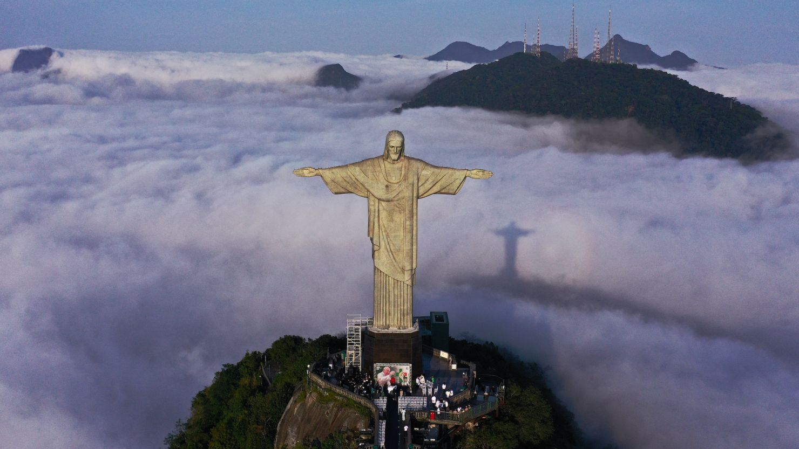
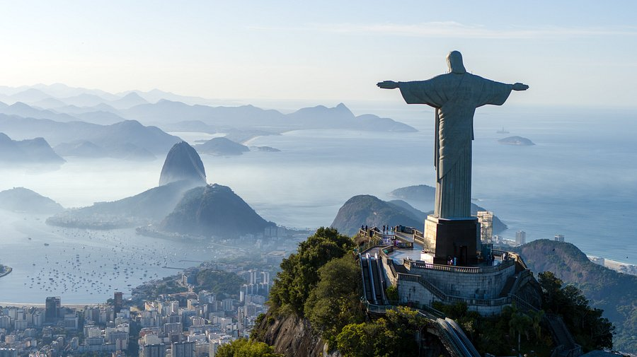
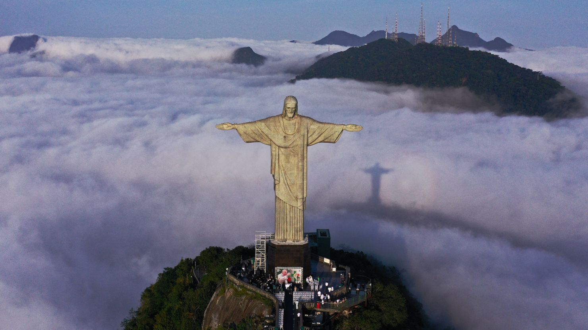
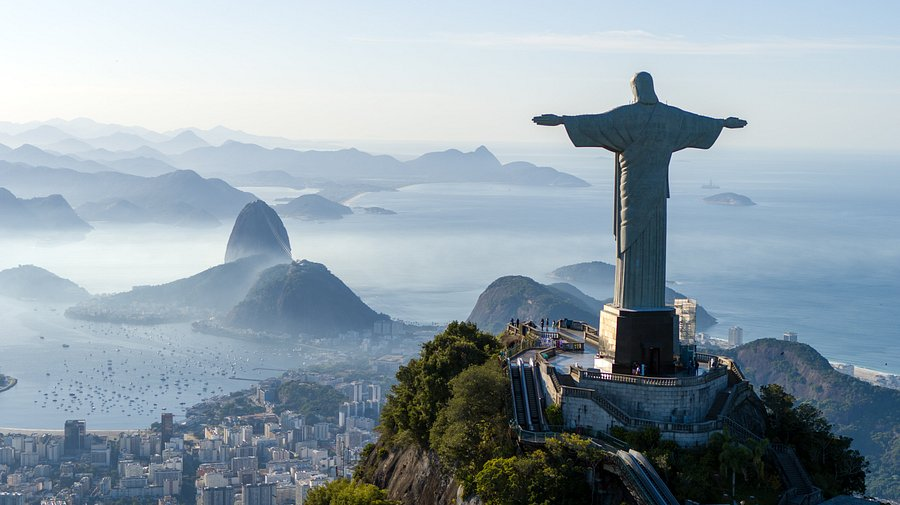

Christ the Redeemer
Christ the Redeemer is an iconic statue of Jesus Christ located atop Corcovado Mountain in Rio de Janeiro, Brazil. Completed in 1931, it stands as one of the most recognizable landmarks in the world. The statue represents not just the religious significance of Christianity but also the welcoming spirit of Brazil. With its towering height of 30 meters (98 feet) and arms spanning 28 meters (92 feet), it offers an imposing figure that overlooks the city of Rio de Janeiro. It was designed by French sculptor Paul Landowski and built with reinforced concrete and soapstone tiles. The statue is a symbol of peace, embraced by the open arms of Christ, welcoming people to Brazil and the city. Christ the Redeemer was designated one of the New Seven Wonders of the World in 2007, a recognition that further solidified its cultural importance. Today, it attracts millions of visitors annually from all over the world. The statue not only represents Rio's cultural identity but also serves as a global emblem of faith and religious devotion. The surrounding landscape of Rio de Janeiro, including Sugarloaf Mountain and Guanabara Bay, complements the grandeur of the monument.
➤ History
➤ Geography
➤ Architecture
➤ Tourism
Gallery
 


